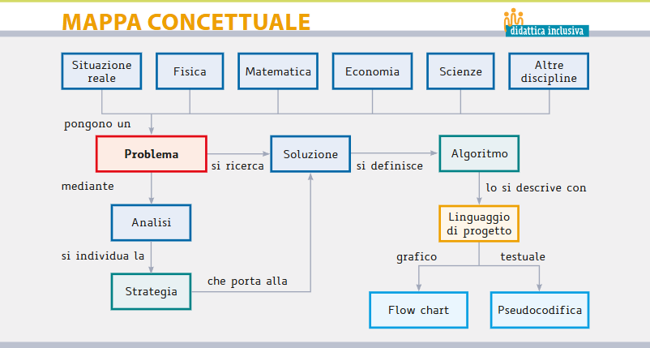

Mappa concettuale
Dalla situazione reale → Problema → Analisi → Strategia → Soluzione/Algoritmo → Linguaggio (flow-chart / pseudocodice / codice).

Definizione (informale → formale)
- Problema (informale): una domanda generale a cui vogliamo poter rispondere in modo sistematico per tutte le situazioni di un certo tipo.
- Istanza: un caso specifico del problema (gli input).
- Soluzione: l’output corretto associato a una data istanza.
- Problema computazionale (formale): una relazione (o funzione) che associa ad ogni istanza valida una soluzione secondo regole precise.
- Decisione: risposta sì/no. Es.: “il numero n è primo?”
- Ricerca: trovare un oggetto. Es.: “trova un divisore di n > 1”
- Ottimizzazione: trovare la soluzione “migliore”. Es.: “il percorso più corto da A a B”
- Enumerazione: elencare tutte le soluzioni. Es.: “tutte le fattorizzazioni di n”
Il concetto di problema
Il matematico e l’informatico identificano con la parola problema
una questione (o quesito) che deve essere risolta, della quale viene data:
- una situazione iniziale con dati noti,
- un obiettivo da raggiungere (la soluzione desiderata).
La soluzione di un problema consiste nella definizione della procedura
ovvero dell’insieme di operazioni da eseguire per raggiungere lo scopo desiderato.
Ben-formulazione (Well-posedness)
Un problema computazionale può essere rappresentato formalmente come una tripla: (I, O, R)
- I
- insieme delle istanze di input
- O
- insieme delle soluzioni possibili (output)
- R
- insieme di vincoli o relazioni che legano input e output
Risolvere il problema significa: ∀ i ∈ I, trovare almeno un o ∈ O tale che ( i, o ) ∈ R.
Definizione matematica di relazione
Una relazione binaria R tra due insiemi I e O è un sottoinsieme del prodotto cartesiano:
R ⊆ I × O.
Ogni elemento di R è una coppia ordinata ( i, o ) con i ∈ I e o ∈ O. Dire che ( i, o ) ∈ R significa che o è una soluzione valida per l’istanza i.
Esempi di relazioni
-
Problema del massimo in un insieme finito
- I = { insiemi finiti di numeri reali }
- O = ℝ
- R = { ( S, x ) | x ∈ S ∧ x ≥ y ∀ y ∈ S }
Esempi: ( {3, 7, 5}, 7 ) ∈ R ma ( {3, 7, 5}, 5 ) ∉ R.
-
Problema della somma di due numeri
- I = ℝ × ℝ
- O = ℝ
- R = { ( ( a, b ), s ) | s = a + b }
Esempi: ( (2, 3), 5 ) ∈ R, ( (2, 3), 4 ) ∉ R.
-
Problema di decisione (parità)
- I = ℕ
- O = { true, false }
- R = { ( n, true ) | n è pari } ∪ { ( n, false ) | n è dispari }
Proprietà di una buona formulazione
- Specificità: il dominio degli input I è chiaramente definito (tipi, formato, vincoli).
- Non ambiguità: la relazione R è definita in modo univoco.
- Totalità: ∀ i ∈ I esiste almeno un o valido tale che ( i, o ) ∈ R.
- Verificabilità: data una coppia ( i, o ) è possibile verificare meccanicamente se ( i, o ) ∈ R.
- Misurabilità: le risorse per trovare o (tempo, spazio) sono valutabili/analizzabili.
Dal problema all’algoritmo
- Analisi del contesto (problema reale) → modello semplificato.
- Formalizzazione (input, output, vincoli, obiettivo).
- Algoritmo (procedura finita, non ambigua, efficace).
- Programma (implementazione in un linguaggio).
- Verifica: correttezza → termina? produce l’output corretto?
- Analisi: costo in funzione della taglia dell’input (|input|).
Nota: l’algoritmo è indipendente dal linguaggio; il programma dipende da linguaggio, librerie e macchina.
Modello di calcolo & misura della complessità (spoiler)
- Modello: definisce quali operazioni hanno costo unitario (es. RAM astratta).
- Tempo: numero di passi elementari in funzione di n = |input|.
- Spazio: memoria addizionale necessaria.
- Altre risorse: I/O, chiamate di rete, energia, comunicazione...
Esempi lampo
- Somma di due interi (funzione): input (a,b), output a+b.
- Ordinamento (ottimizzazione/ricerca): input lista L, output L ordinata; obiettivo: minimizzare confronti.
- Cammino più corto (ottimizzazione): input grafo G, nodi s,t; output distanza minima e percorso.
- Primalità (decisione/ricerca): “n è primo?”, oppure “trova un divisore > 1”.
Attività (in classe)
- Formalizza il classico problema del “contadino, lupo, capra, cavolo”:
- precisa stato, mosse lecite, vincoli, obiettivo;
- classificalo: decisione/ricerca/ottimizzazione?
- Specifica I/O per: “dato un numero n, stabilisci se è perfetto”.
- Extra (a casa): scrivi uno pseudocodice per il controllo di primalità per tentativi.